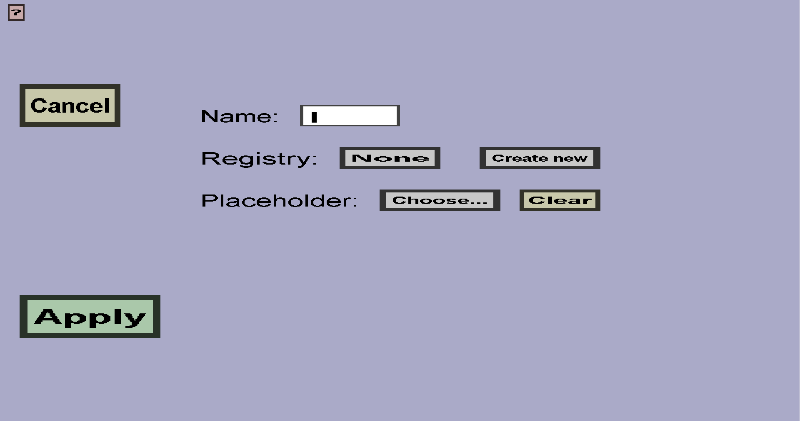

The fuel slot menu can be used to create fuel slots for a custom container. Fuel slots have a
name and a fuel registry. The name is used to distinguish fuel slots from each other and to
link them to fuel indicator slots. The fuel registry determines which items are considered
fuel and how long they keep it burning. The menu should look like this:

-
The 'Cancel' button will take you back to the container edit menu
for the container you are editing, without adding a new fuel slot.
-
The 'Apply' button will create the new fuel slot (if the name and fuel registry don't have
any validation errors) and use it to replace the old slot (you came to this menu by clicking
on a slot, which is the one that will be replaced). It will also take you back to the
container edit menu you came from.
-
You need to give the fuel slot name and insert that into the text edit field on the right of
'Name:'. No two fuel slots in the same custom container can have the same name. Oter than that,
it doesn't really matter what name you give, but I recommend using logical names if you use more
than 1 fuel slot. Currently, the name of fuel slots will not be shown or used in-game.
-
You also need to give the fuel slot a fuel registry. This fuel registry will determine
which items players can use as fuel, as well as how long they keep this fuel slot burning.
If you use multiple fuel slots, they may use the same fuel registry, but this is not necessary.
There should be 2 buttons on the right of 'Registry:'. The first button shows the name of the
currently selected fuel registry, or 'None' if you haven't selected one yet. Click the button
to change it. The 'Create new' button can be used to create a new fuel registry (and you need
this if you haven't made one yet). The button will take you to the
fuel registry edit menu, where you can create it.
After creating a new one, you should be taken back to this menu, but you will see an
extra option when you click on the first button.
Currently, you can only use your own fuel registries, so not minecrafts default ones.